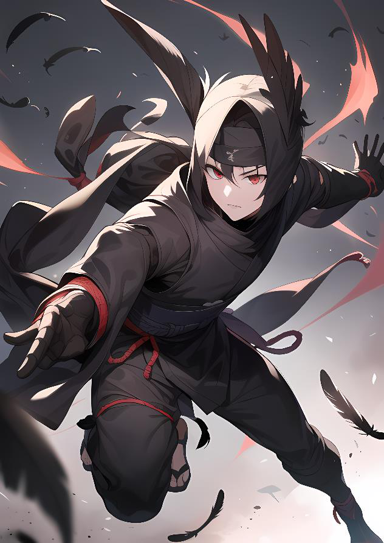

Aventura: Karasu No AkiLa Caída del Cuervo — campaña de iniciación
La Caida del Cuervo es una aventura con tintes desagradables, con esa parte oscura del Yosai que no gusta ver, esa en que los aliados se pasan al lado oscuro y tienen motivo para hacerlo. La desesperanza de ver que no se pueden alcanzar las metas impuestas por familia y sociedad marcan el desarrollo de dicha aventura.
Un Kazoku gris, en descomposición, caido en desgracia, intentando por todos los medios aferrarse al poder, a la cima, y cayendo en las garras de la oscuridad para poder hacerlo.
Esta es la historia de Karasu Akio y de su caida a las profundidades para convertirse en Karasu Koi.
Karasu Akio — PC 6
At Me +1 · At Di +1 · De Me 11 · De Di 11 · Da Me +1 · Da Di +1
Akio es un joven de pelo negro y largo, con ropajes amplios que mezclan negro y blanco, sus ojos son negros pero brillantes y siempre tiene un rictus de enfado, de rabia. Está desesperado por mantener a su familia en la cima, y no puede hacerlo.
Academia
Su entrada a la academia es un puro desastre, todo el mundo lo mira como alguien secundario y está por debajo de todos los compañeros que hay, más teniendo en cuenta que los PJs son auténticos prodigios, la creme de la creme que haya salido en muchos años atrás.
Los combates iniciales que habrá para entrar serán la gota que colme el vaso.
Esta será la iniciación de los PJs también, aquí se les formará para que más adelante formen un Nakama.
Torneo
Una de las formas más comunes de decidir quien forma parte de un Nakama es viendo como se enfrentan entre sí los jovenes luchadores, aquellos que serán los futuros Senshis partes de un Nakama.
Lo ideal es enfrentar a todos los PJs cruzándolos contra PNJs, para darles más protagonismo.
Intenta preparar personajes que complementen bien a los protagonistas, tanto en sexo como en estilo. Un Yosai lleno de chicos solamente es aburrido, y lo mismo con chicas. Recuerda que en este juego es importante las alianzas matrimoniales. Dales importancia a las relaciones para el largo plazo,
Somos un Nakama
Tras el torneo, la Daimyo Washi Minori (Verdad) selecciona los Nakama a su gusto y elección (es decir, haz lo que te de la gana y creas que mejor va a funcionar). Por supuesto, los PJs forman su uno de esos Nakama.
Es importante también definir una tradición propia para marcar el paso de niño a Senshi, un guerrero que va a dar su vida por el Yosai. Recomendamos que cada personaje diseñe el rito de su Kazoku, que lo hará más especial.
Traición
Tras el Torneo akio es rechazado como Senshi y no puede formar parte de un Nakama. Despechado, con los últimos ahorros Akio pagará a Ronins para que asesinen a los PJs, pero estos, por suerte, no irán por separado al estar acompañados de su nuevo Sensei, Washi Nori.
Washi Nori — PC 30
At Me +4 · At Di +2 · De Me 13 +3 · De Di 12 +2 · Da Me 2d6 (4) · Da Di 2d6 (4) · CK+1 PK 5 (1) · Ini +2 PV 30 (2) · Ab 3 (3)
Curar II (2): Se cura 2d6, Dif 10, PK 2. Maestro extremadamente justo, inflexible y profesional. En el fondo, ha crecido así porque perdió a su primer grupo de alumnos en una batalla y se culpa a sí mismo por haber sido demasiado bueno con ellos.
El grupo de Ronin se compone de 4 bastante peligrosos, conocidos como los Unmei Sokonai (Bastardos del Destino): Ryota, Saburo, Sadao y Kuro, los 4 con exactamente los mismos Jutsus y todos gemelos.
Unmei — PC 20
At Me +1 Da Me 1d6+1 · At Di +3 Da Di 1d6+2 · De Me 12 · De Di 13 · CK +2 PK 10 · Ini +3 PV 25 · Ab 2
Proyectil doble (3 PdJ): ataque a distancia que lanza dos proyectiles que causan 1d6+2 de daño a 2 objetivos diferentes. Cada gemelo tiene un tipo de Control de Ki distinto: Fuego (Rojo), Hielo (Azul), Rayo (Amarillo) y Energía (Blanco), que además son los colores de sus ropas combinados con el negro.
Con una tirada de Advertir/Notar Dif 12, los jugadores podrán ver a Akio sobre una casa observando el combate, sin participar. Si le dicen porqué no ayudó, dirá que tenía miedo, simplemente, que no tiene suficiente poder.
Muerte de Izumi
Washi Izumi, hija del Shogun, de 5 años de edad, aparece muerta en su cama con un kunai con cabeza de serpiente clavada en su corazón. La revolución que se forma en la aldea es impresionante y comienzan preparativos para ir en busca del Yami Yosai y hacerles pagar caro el atrevimiento.
Los PJs no irán ya que aún no se les considera suficientemente adultos, en su lugar deben organizar el cambio de posesión de Karasu por la casa que lo sustituya.
Caida y Ascenso
Los Pjs deberán acompañar a aquel de cuya casa menor acabe de ascender, para tomar posesión de la nueva zona, de los nuevos edificios. Los Karasu sin embargo, se rebelarán y lucharán porque no quieren ceder la posesión.
Akio, ahora Koi, ha asesinado a sus padres y ha tomado el control de la casa, e intentará combatir por todos los medios que los saquen de allí. Antes muertos que humillados.
Guardias de élite — trampa de aceite
4 grupos de 6 intentarán evitar que se tome posesión, luchando en el patio donde habrá aceite con fuego. Dif Atletismo 13 para no quemarse 1d6. 4 Grupos Guardias: +6 At +6 Da · Defensa 13 · PV 30 · Ini 16 (cada 5 menos cae uno y pierden 1 punto).
Escena final
Arriba del todo de la casa, encontrarán a Koi con sus padres crucificados y el mismo Koi haciendo Seppuku, con una especie de hilos de Ki yendo hacia una Marioneta de un Golem Negro de Metal. Éste empezará a destruir todo lo que toca, y será extremadamente difícil atacarle.
En el despacho de Koi había libros que hablaban de dicho engendro abiertos en su mesa de estudio, y explicaba que si se le rociaba con agua, su resistencia y velocidad eran menores, porque interrumpía el flujo de Ki que albergaba.
Golem Negro de Metal
Criatura invocada por hilos de Ki
| At Me | De Me | De Di | Da Me | Abs | Ini |
|---|---|---|---|---|---|
| +5 | 15 | 13 (+3) | 2d6 | 6 (3 con Agua) | 6 (3 con Agua) |
En el cuerpo de Koi hallan dos kunais idénticos a los usados para asesinar a Izumi. Y si se investiga hay pruebas suficientes con planos y estudios en un diario para saber que ha sido él, y no el Yami Yosai.
La Casa del Cuervo es desterrada para siempre de Kaze Yosai, y todos sus integrantes menores de edad deben hacer Seppuku para limpiar los crímenes de sus descendientes, que serán asignados a diferentes casas.
